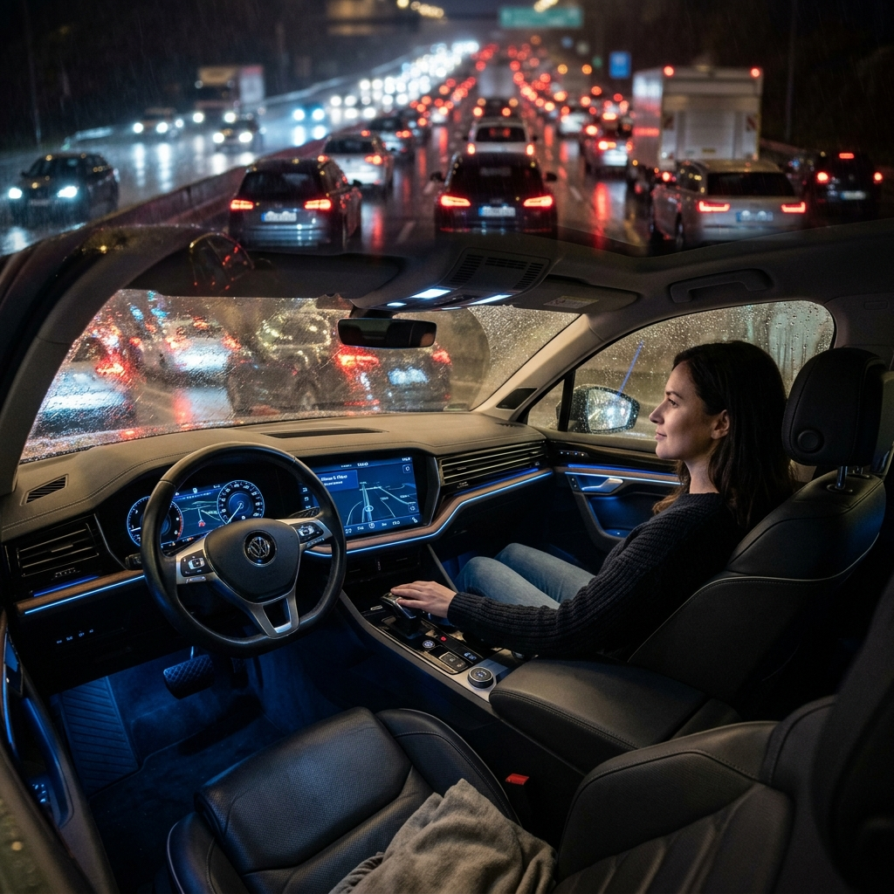
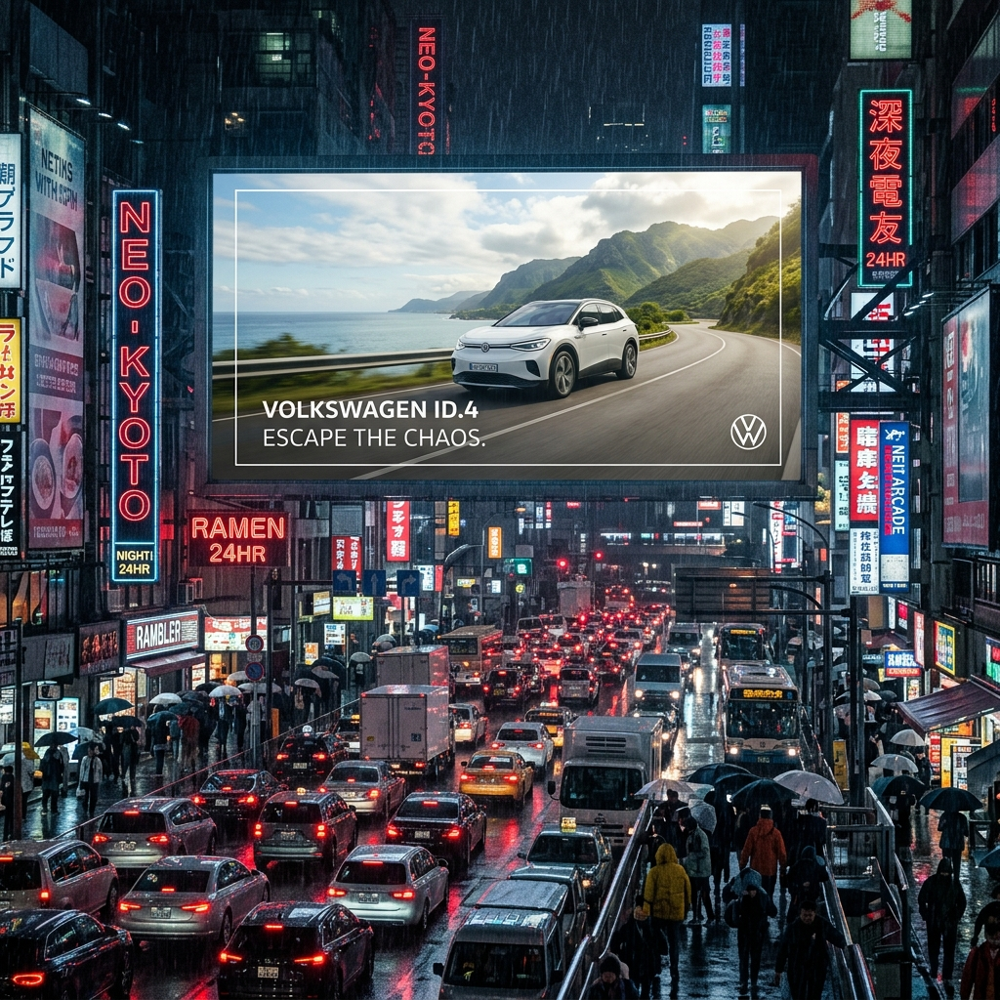

Rastreando 11 Millones de Dólares para Definir el Futuro de Volkswagen
Iniciar Análisis de Inversión
Antes, la marca no necesitaba invertir fortunas para vender un estatus; invertía en masificar el "Auto del Pueblo". La percepción era netamente utilitaria y conservadora. Era una inversión eficiente, pero de bajo margen de ganancia.
Hoy, la data demuestra un giro de 180 grados. Volkswagen está inyectando todo su dinero en posicionarse como una marca aspiracional de Lujo Dinámico, invirtiendo fuertemente en su línea de SUVs (T-Cross, Taos).
En términos de INVERSIÓN PURA, Volkswagen ocupa el 6º lugar (~$10.6 Millones). Chevrolet invierte 11 veces más (~$119M). Si VW usa su inversión para gritar en los mismos medios masivos que Chevrolet, su dinero se perderá en el ruido.
La marca ha decidido apostar su inversión a la categoría UTILITY. El T-Cross se lleva ~$3.1 Millones en inversión solitaria, convirtiéndose en el ancla que debe generar estatus para que los demás autos se vendan.
VW invierte agresivamente en Febrero (~$2.1M) y Mayo (~$1.3M). Es una táctica de inversión de "Anticipación": gastar el presupuesto antes de que la competencia sature fin de año.
Más de $6 Millones de Inversión van directos a la Radio (principalmente noticieros matutinos). Esto genera un asombroso volumen de 9,153 inserciones comerciales.
Dato Crítico: Invertir $6 Millones para emitir el mismo anuncio 9,000 veces a conductores estresados puede destruir el valor de la marca si la pieza no es perfecta.
Campaña 100% justificada por la Data de Inversión (Categoría SUV + Estado de Challenger).
Chevrolet y Renault inyectan decenas de millones en TV Nacional (saturación visual masiva). Marcas como Nissan invierten en experiencias visuales.
VW está atrapada en la "Ceguera Visual": Gasta casi todo en Radio (medio ciego). Nadie puede desear el diseño de una T-Cross si no la puede ver.
El público objetivo de una SUV (ejecutivos, familias modernas) es altamente visual y digital.
La Mejor Inversión: Reducir el 50% del gasto en Radio y trasladarlo a TV por Suscripción (Cable) y OOH Digital (Vallas). La TV por Suscripción permite segmentar por poder adquisitivo, y las vallas muestran el diseño premium del vehículo en tamaño real.

Mientras hacemos la transición de presupuesto, el dinero que quede en Radio debe ser disruptivo.
Para subir el nivel de visualización sin gastar los millones de Chevrolet, usaremos FOOH (Fake Out of Home).
La Propuesta: Videos CGI hiper-realistas para TikTok e Instagram donde una T-Cross gigante sale de la pantalla del Movistar Arena en Bogotá. Cuesta una fracción de la TV, pero genera millones de vistas orgánicas por lo impactante de la ilusión óptica. Esto eleva la marca a un estatus tecnológico inalcanzable para la competencia tradicional.

El Contexto: En diciembre, todas las marcas de autos enloquecen gritando ofertas, bonos y aguinaldos. La saturación publicitaria llega al 100%. Históricamente, VW invierte muy poco aquí (~$0.4M).
La Pieza Creativa: "El Regalo de la Paz". Mientras Chevrolet grita "¡Cómpralo ya!", Volkswagen lanzará campañas puramente emocionales (Branding). Visuales de una familia durmiendo plácidamente en el asiento trasero de una Taos mientras viajan de noche, con el copy: "Esta Navidad, el mejor regalo es llegar tranquilos. Siente el silencio." Nos identificamos como la marca madura, elegante y alejada del desespero comercial.
El Contexto: Históricamente, VW hace su mayor inversión en Febrero (~$2.1M). La competencia está exhausta después de diciembre y la mente del consumidor busca propósitos de año nuevo.
La Pieza Creativa: "Tu Nuevo Territorio". Activaciones FOOH (CGI) y vallas Premium en la ciudad. El mensaje no es comprar un auto, es actualizar tu estatus operativo para el nuevo año. Mostrar la T-Cross como el "traje a la medida" para enfrentar los retos urbanos del nuevo año. "El año nuevo exige un estándar nuevo. Tu ciudad, tus reglas." Nos identificamos como la marca del éxito profesional y personal.
Según el histórico de Inversión:
- Despliegue Radial (1 Trimestre): ~$2.5 Millones USD (Concentrado en Febrero y Marzo).
- Producción Audio 8D: Extremadamente bajo costo de producción comparado con TV (Ahorro del 80% en FX).
- OOH (Vallas Urbanas en BOG/MED): ~$800,000 USD mensuales para dominancia visual.